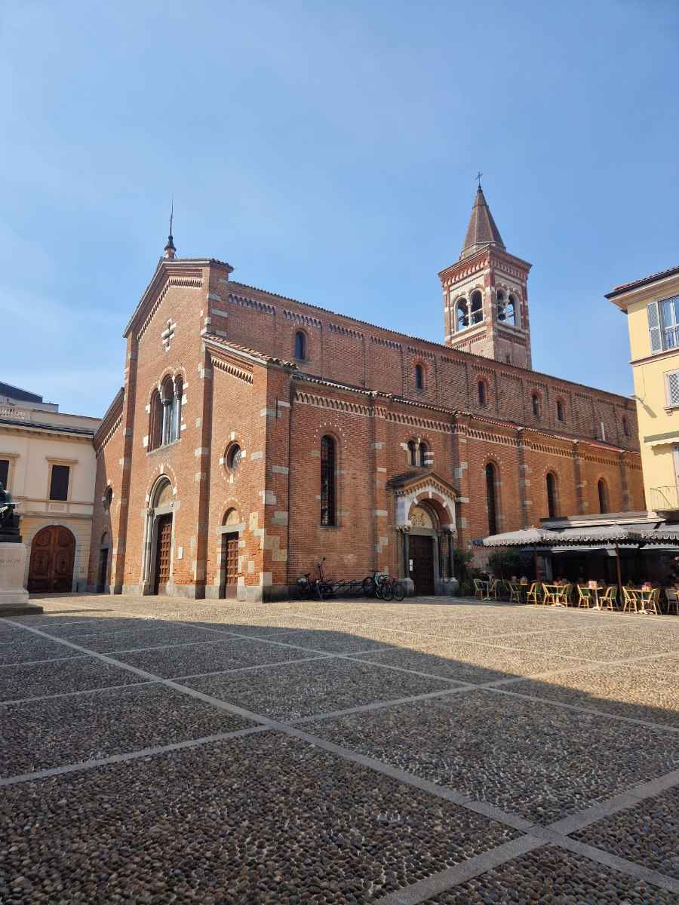

Monza oltre le due cartoline

Lo dicevo già parlando degli affreschi degli Zavattari: Monza, nella percezione comune, si esaurisce in due soli referenti — l'Autodromo e, per chi ha qualche nozione in più, la Corona Ferrea. Quell'articolo raccontava cosa si perde chi si ferma lì, dentro la cappella di Teodolinda. Qui voglio allargare lo sguardo a tutta la città che sta intorno al Duomo: un centro storico compatto, percorribile a piedi in un paio d'ore, che alterna i luoghi che tutti conoscono ad altri che quasi nessuno si ferma a guardare.
Il cuore medievale: dall'Arengario al Ponte dei Leoni
Il punto di partenza naturale resta il Duomo, sulla cui facciata a bande bianche e verdi e sulla cappella affrescata dagli Zavattari ho già scritto in un articolo dedicato — qui vale solo la pena ricordare che a fianco, nel Museo del Tesoro, si può vedere da vicino la Corona Ferrea, la reliquia che la leggenda lega alla regina longobarda Teodolinda e che dà il nome, non a caso, a uno dei quotidiani sportivi più letti d'Italia.
Da lì, in pochi passi, si raggiunge l'Arengario: il palazzo comunale duecentesco su cui convergono le vie principali del centro, autentico fulcro della vita cittadina fin dal Medioevo, quando ospitava le assemblee pubbliche — da cui il nome. Intorno, il reticolo di viuzze del centro storico conserva ancora oggi quell'atmosfera raccolta di "città a misura d'uomo" che i monzesi rivendicano un po' polemicamente nei confronti della vicina, ingombrante Milano.
Proseguendo lungo il fiume Lambro si arriva al Ponte dei Leoni, ricostruito nell'Ottocento sui resti di un più antico ponte romano e sorvegliato da quattro statue leonine agli accessi: è oggi uno dei punti più fotografati della città, e la sera si anima di locali e bar lungo l'acqua. Nei dintorni valgono una sosta anche le chiese minori del centro — San Pietro Martire, in mattoni rossi, con l'alto campanile che si intravede da diverse vie del centro; Santa Maria in Strada, trecentesca; San Maurizio, legata dalla leggenda popolare alla vicenda della "Monaca di Monza" resa celebre da Manzoni.

La Villa Reale e il parco recintato più grande d'Europa
A una ventina di minuti a piedi dal centro si entra in un mondo completamente diverso: la Villa Reale, o Reggia di Monza, fatta costruire tra il 1777 e il 1780 dall'imperatrice Maria Teresa d'Austria per il figlio Ferdinando d'Asburgo-Este, allora governatore della Lombardia. Il progetto porta la firma di Giuseppe Piermarini, lo stesso architetto del Teatro alla Scala di Milano, che qui seppe fondere la sobrietà lombarda con la grandiosità di una vera reggia — tanto che il costo lievitò rapidamente dai 70.000 zecchini iniziali fino a superare i 100.000, per finanziare anche il vasto giardino annesso.
La storia della Villa nel Novecento è stata tutt'altro che lineare: dopo essere passata ai Savoia con l'Unità d'Italia, occupazioni, spoliazioni e decenni di incuria l'hanno progressivamente svuotata del suo antico splendore, fino a una concessione a privati negli anni Duemila che ha suscitato non poche polemiche locali. Solo con il restauro concluso nel 2014 — e il Masterplan da 55 milioni di euro tuttora in corso, finanziato da Regione Lombardia — la Villa ha ricominciato a essere davvero vissuta: oggi è visitabile nei suoi appartamenti reali, con il salone da ballo e le sale affrescate, mentre intorno si apre il Parco di Monza, con i suoi 700 ettari il più grande giardino recintato d'Europa — laghi, viali secolari, cascine storiche, persino un roseto ricavato dall'antica serra settecentesca.
Il luogo che quasi nessuno cerca: la Cappella Espiatoria
Ed eccomi alla parte meno battuta, quella che vale la pena raccontare proprio perché quasi nessuno la mette in agenda. A pochi passi dalla Villa Reale, in via Matteo da Campione, si erge un monumento alto 35 metri a forma di stele, austero e quasi dimenticato dal turismo di massa: la Cappella Espiatoria, costruita esattamente nel punto in cui, la sera del 29 luglio 1900, l'anarchico Gaetano Bresci uccise a colpi di pistola il re Umberto I di Savoia, di ritorno da una manifestazione ginnica non lontana dalla Villa.
Fu il successore Vittorio Emanuele III, insieme alla regina madre Margherita, a volere il monumento: progettato dall'architetto Giuseppe Sacconi — lo stesso del Vittoriano di Roma — e completato dal collega Guido Cirilli dopo la sua morte, fu inaugurato dieci anni dopo i fatti. Nella cripta sotterranea, un cippo di marmo nero segna con esattezza il punto in cui il sovrano cadde, mentre all'esterno una grande esedra a mosaico raccoglie i simboli sabaudi, dalla Corona Ferrea al motto di casa Savoia. È un luogo che ha il potere raro di far percepire fisicamente un evento che cambiò la storia d'Italia — l'unico regicidio della storia unitaria — eppure resta perlopiù ignorato da chi visita la città solo per l'Autodromo o per una foto veloce davanti al Duomo. Vale la pena, anche solo per dieci minuti, andarci apposta.
E l'Autodromo?
Non lo ignoro di certo — anzi, è giusto ricordare che il circuito, inaugurato nel 1922 dentro un'area ritagliata proprio nel Parco di Monza, è il terzo autodromo permanente più antico al mondo ancora attivo, sede storica del Gran Premio d'Italia di Formula 1 fin quasi dagli albori del campionato. Resta un pezzo di storia dello sport a livello mondiale, e chi ama i motori farebbe bene a visitarlo. Ma è, appunto, l'unica cosa che la maggior parte delle persone associa a questa città — ed è proprio quello squilibrio, quella cartolina buona per tutte le occasioni, che vale la pena correggere ogni volta che se ne ha l'occasione.
Monza, in fondo, è tutta qui: una città che si lascia scoprire solo a chi ha la pazienza di allontanarsi di qualche centinaio di metri dai due o tre punti che tutti fotografano — e che, proprio in quei pochi passi in più, restituisce generosamente molto più di quanto prometta.
Fonti principali: yesmilano.it — tusoperator.it — monzanet.it — viaggiandoatestaalta.it — tiraccontounviaggio.it — reggiadimonza.it — it.wikipedia.org — in-lombardia.it — mbnews.it — villarealemonza.org — artuassociazione.org — monzaindiretta.it — ilcittadinomb.it — comune.monza.it.